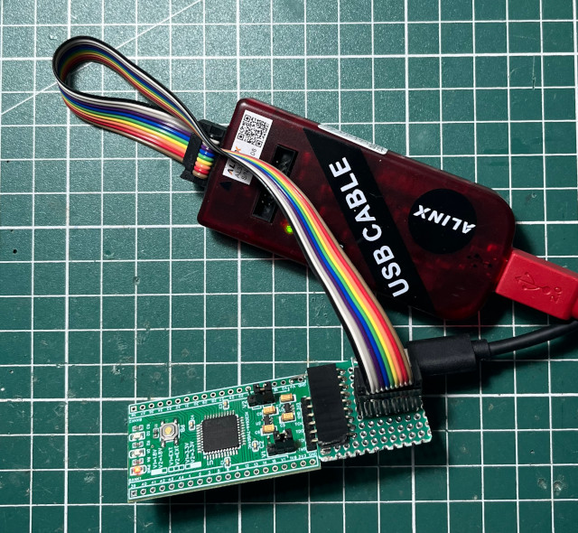

Steward
分享是一種喜悅、更是一種幸福
微處理器 - Xilinx XC2C64A (CoolRunner-II CPLD) - Xilinx ISE - Verilog - LED
參考資訊：
http://dangerousprototypes.com/docs/CoolRunner-II_CPLD_breakout_board
http://dangerousprototypes.com/docs/CPLD:_Complex_programmable_logic_devices#Programming
main.v
module main (
input clk,
output reg led
);
reg [23:0] cnt;
always @(posedge clk) begin
if (cnt == 5000000) begin
cnt = 0;
led <= ~led;
end else
cnt = cnt + 1;
end
endmodule
main.ucf
NET "clk" LOC = "P1" | BUFG = CLK; NET "led" LOC = "P39";
開啟Xilinx ISE

專案路徑

CoolRunner-II => XC2C64A => VQ44 => -7

加入檔案


Process => Implement Top Module

編譯完成後，會產生main.jed

連接JTAG

確定JTAG可以正確被識別

開啟iMPACT

Enter a Boundary-Scan chain manually

加入Device

選擇編譯後的main.jed

用滑鼠點擊一下IC圖示，點選後，圖案會變成綠色

按滑鼠右鍵選擇Set Programming Properities...

取消Verify

Output => Cable Setup...

設定成125KHz

在IC圖示上面按滑鼠右鍵，選擇Program

下載完成

完成